Explore the History Timeline of the college

Discover our hallmark Engineering Programs

Learn about our College's Naming
Explore the History Timeline of the college
Discover our hallmark Engineering Programs
Learn about our College's Naming
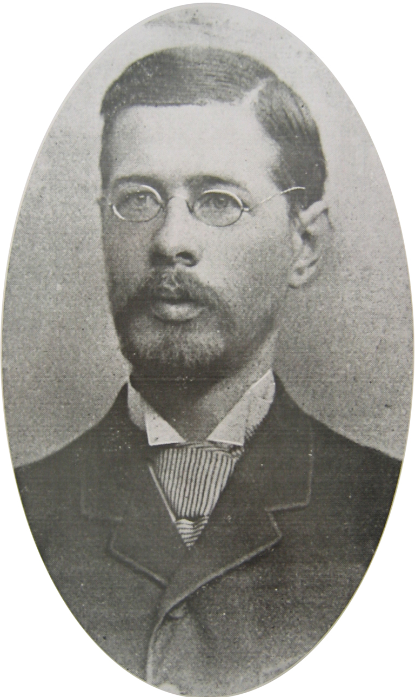
The engineering academic unit is renamed the College of Engineering, with Professor Charles A. Perkins as chairman of the faculty. Perkins taught at UT for more than 50 years, until he was well over 80 years old. He was the author of a widely used textbook in electrical engineering. His wife, Angie Warren Perkins was UT’s first dean of women.
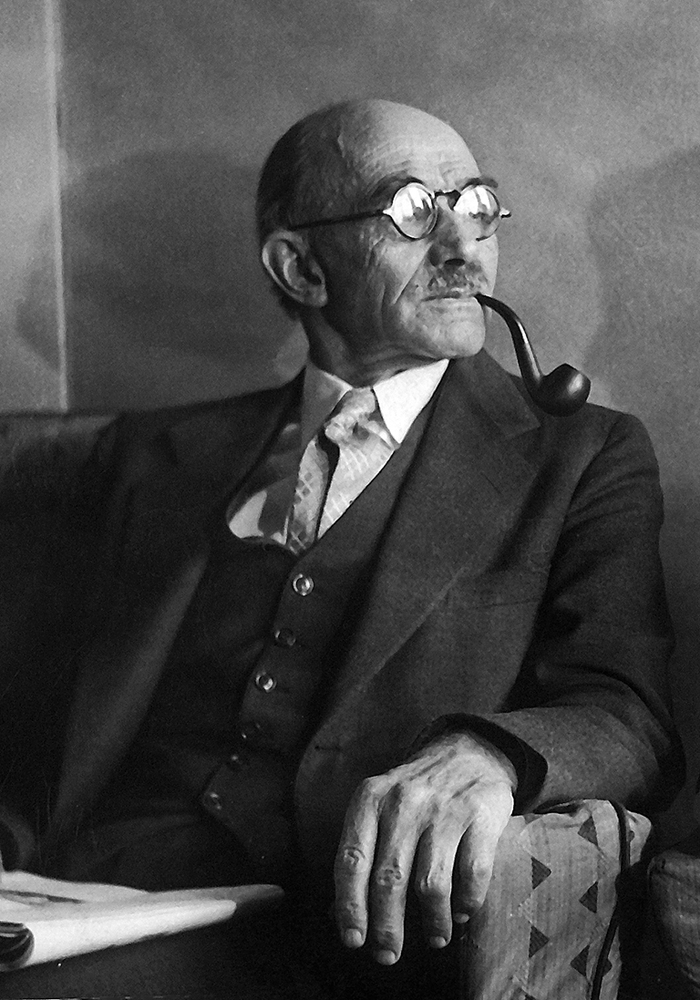
During Professor Charles Ferris’s tenure as the first dean of engineering, the Department of Chemical Engineering was established, and Dean Ferris gained national prominence by funding one of the country’s first cooperative engineering programs. Following his retirement from the deanship, Professor Ferris remained at the university and founded the Department of Industrial Engineering. He completed fifty years of service to UT.
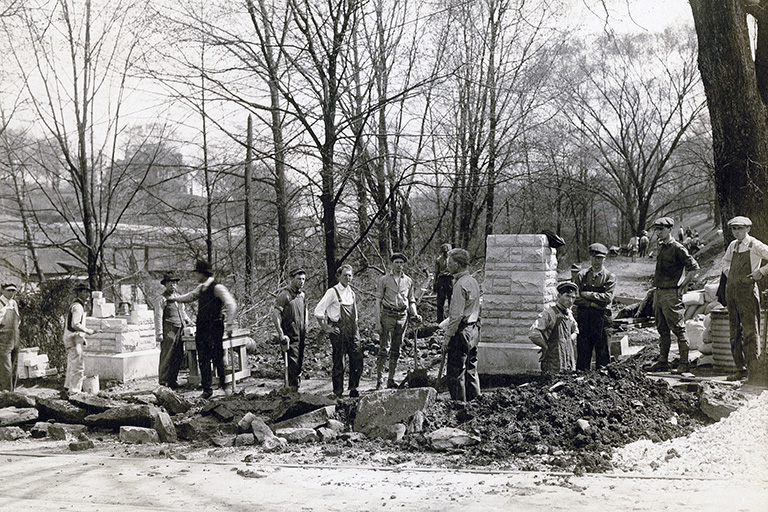
The college holds its first Engineers Day. The event was initially established for students to help clean up the campus. Today, it serves as a fun day of competitions, demonstrations, and workshops for more than 1,900 students from nearly 70 different high schools. Participants experience an overview of the different engineering disciplines and see examples of how an engineer’s work impacts daily life.
The Cooperative Engineering Program (now the Engineering Professional Practice Program) is established in the College of Engineering. The program offers students an opportunity to combine both academic study and professional work experience by securing paid co-op or internship positions with an employer. The program is the second oldest in the south.
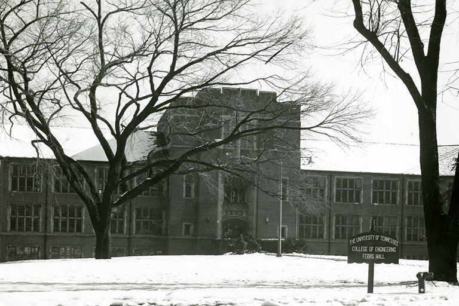
Ferris Hall is built, named after Charles E. Ferris, the first dean of the College of Engineering and founder of the TCE’s Cooperative Engineering Program. The building formerly housed the Min H. Kao Department of Electrical Engineering and Computer Science. The Department of Materials Science and Engineering relocated to Ferris in 2012.
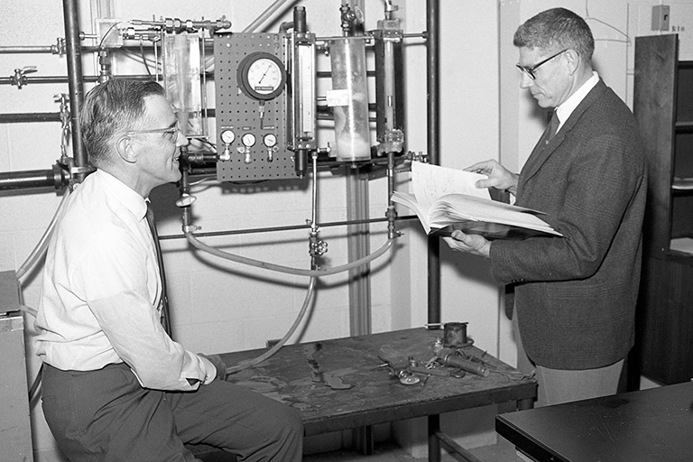
The Department of Chemical Engineering is established. It received accreditation from AIChE in 1939, making it one of the first four chemical engineering programs in the South to receive accreditation. Today, its faculty are actively leading research into both traditional chemical and energy industries as well as new areas of application and innovation, such as biotechnology, pharmaceuticals, advanced materials, and sustainable energy.
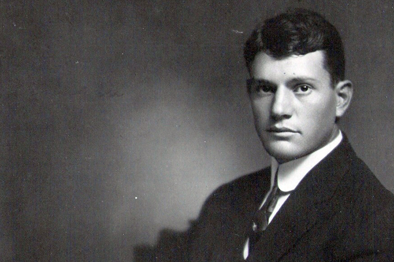
A man of many interests and talents, Dean Dougherty was well known for his service to the field of athletics, both at the university and in the Southeast. Dean Dougherty served as president of the old Southern Conference. He also helped organize the present Southeastern Conference and served as its first secretary-treasurer. During his sixteen-year administration as dean, the college experienced phenomenal growth in numbers of students and faculty, physical facilities, scope of course offerings, and external research activities. The Nathan W. Dougherty Engineering Building was dedicated in Dean Dougherty’s honor on June 6, 1964.
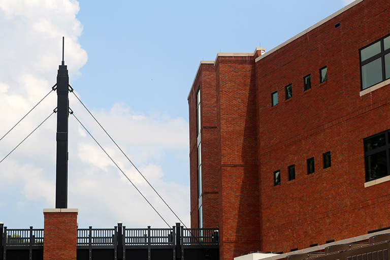
The Department of Industrial Engineering is established, thanks in part to Charles Ferris. The department is now located in the John D. Tickle Engineering Building. The college and the building are named after the John D. Tickle, an ISE alumnus.
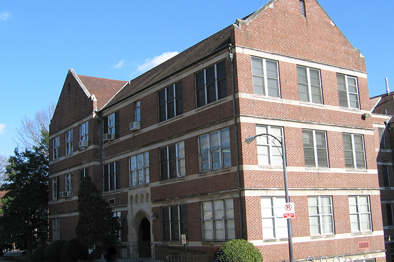
Perkins Hall is constructed, named after Charles A. Perkins, chair of the engineering department before it was established as a separate college in 1877. The 80,805-square-foot building, designed by Barber and McMurry and built by the V. L. Nicholson Company, was dedicated on March 6, 1950, in a formal ceremony in Alumni Memorial Building, followed by tours of both Perkins and Ferris Halls.

The university’s Board of Trustees authorizes the granting of PhD degrees with majors in chemical engineering and in metallurgy—the first engineering doctoral degrees in Tennessee. The first chemical engineering PhD graduate, Frank Chance, spent his professional career with Pfizer. This is also the year the Vols football team won its fourth national championship, and the second of back-to-back championships, under “the General” head coach Robert Neyland.
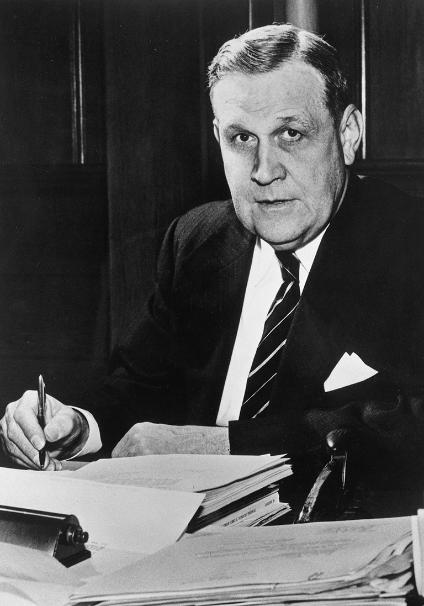
Dean Granger’s contributions to the university, the community, and the engineering profession were numerous. His two greatest loves–students and teaching–became his most memorable legacies. The Armor T. Granger Professorship was established in his honor. The professorship is currently held by Bamin Khomami.
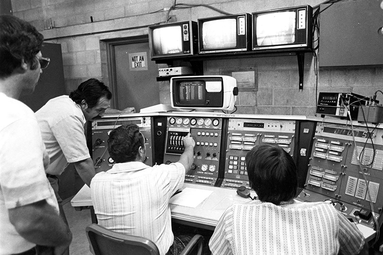
A doctoral program in metallurgy is added to support the growing involvement with the university in cooperative projects with the Oak Ridge National Laboratory and the US Air Force’s Arnold Engineering Development Center (AEDC) in Tullahoma, Tennessee. The following year, B. H. Goethert proposed to the air force and the State of Tennessee that a Tennessee Aerospace Institute, which eventually became UT Space Institute (UTSI), be located near AEDC. Goethert became UTSI’s first director.
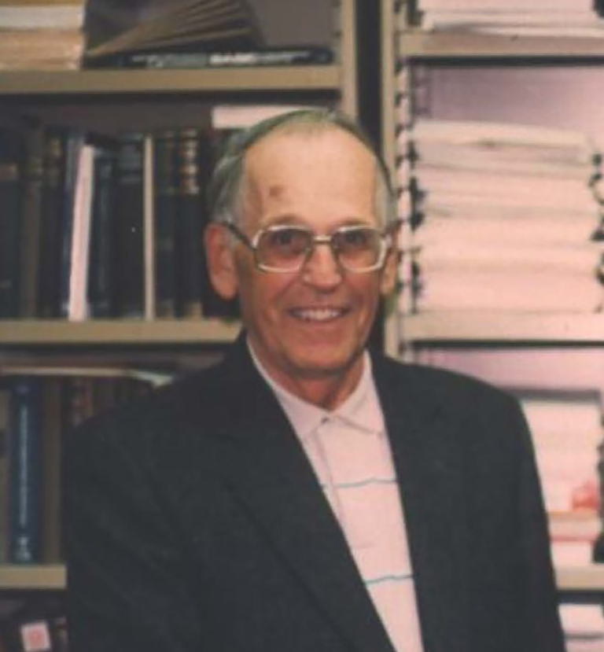
The Department of Nuclear Engineering is established, becoming the first Department of Nuclear Engineering in the United States. Pietro Pasqua served as its first department head until his retirement in 1987. Its graduate program is consistently ranked as one of the top in the nation by U.S. News and World Report.
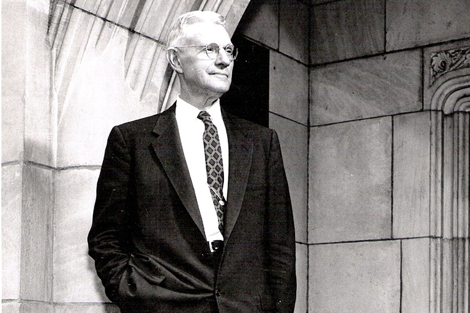
The Dougherty Engineering Building is constructed, named for Nathan Dougherty, who served as dean of the college from 1940 to 1956. When built, the facility housed chemical, mechanical, aerospace, and nuclear engineering. The 123,000-square-foot structure is larger than Ayres Hall and Ferris Hall combined. It was completely air-conditioned when built, and its electrical load exceeded that of all other campus buildings on the Hill.
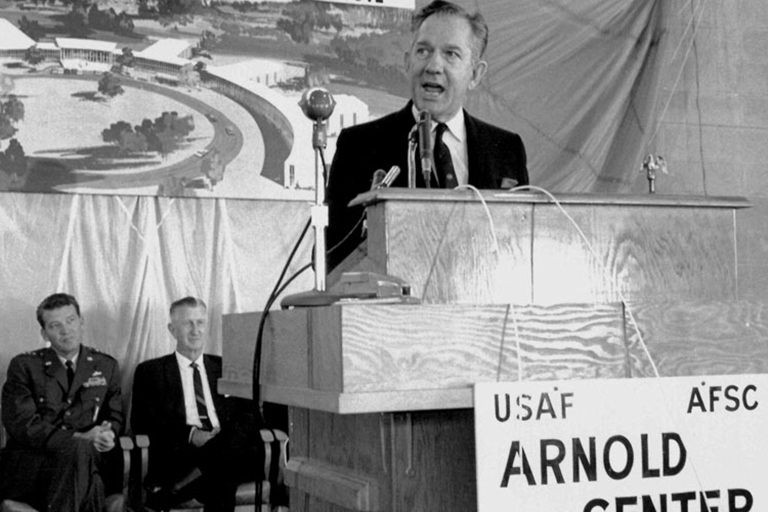
The UT Space Institute is established from the resident graduate programs at the Air Force’s Arnold Engineering Development Center in Tullahoma, Tennessee. UTSI began offering graduate coursework in aerospace engineering as a branch of the College of Engineering. The institute originally held its classes and had its offices in the Arnold Center. In November 1965, it moved to a new $1 million building constructed with funds appropriated by the legislature and located on 365 acres declared surplus by the Air Force. The property was formally transferred to UT by the Tennessee Department of Health, Education, and Welfare on January 29, 1964.
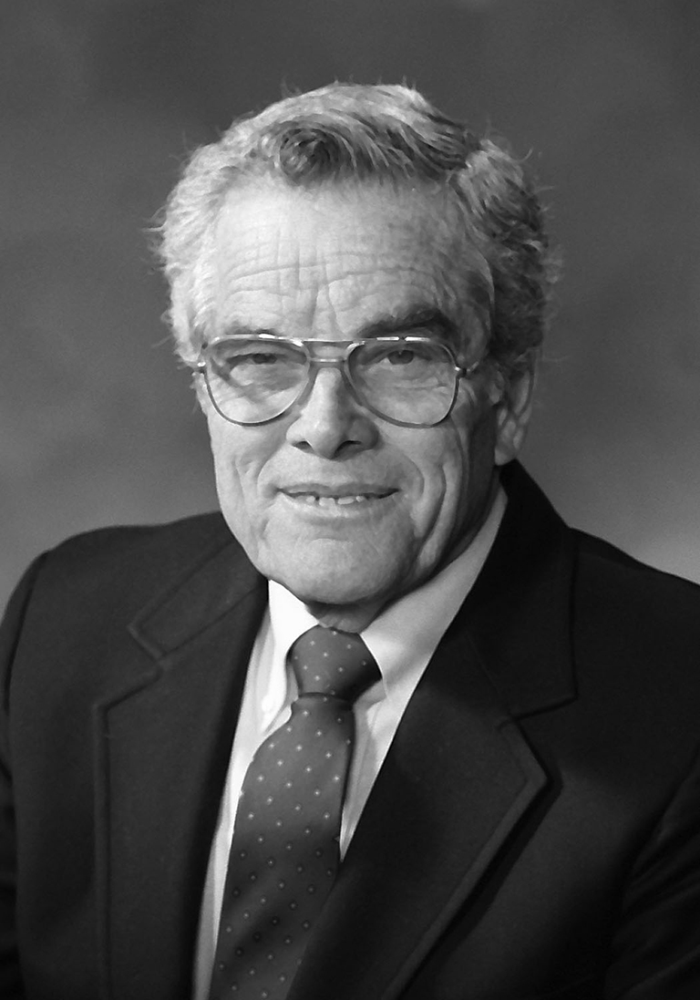
Weaver made many significant contributions to the college. One of his primary goals was to link the mission of the college to the needs of industry. Student enrollments and research activities escalated under Dean Weaver’s guidance. He became UT’s first chancellor and was charged with the responsibility for all teaching, research, and public service programs on the Knoxville campus. After stepping down as chancellor in 1971, he became dean of the UT Space Institute.
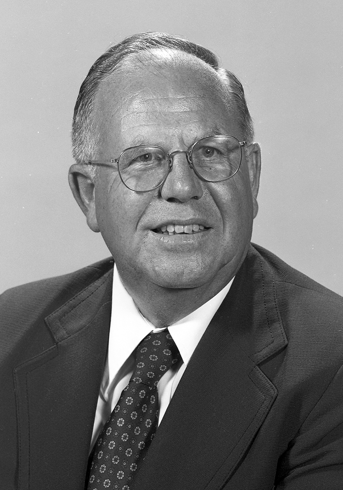
Under Peebles’s assertive leadership, the College of Engineering experienced phenomenal growth in size and quality of its academic and research programs. Dean Peebles was also the first dean to initiate a process for faculty performance review. He was instrumental in establishing the college’s Minority Engineering Scholarship Program, which eventually became the Dwight Hutchins Expanding Access to Engineering Program.
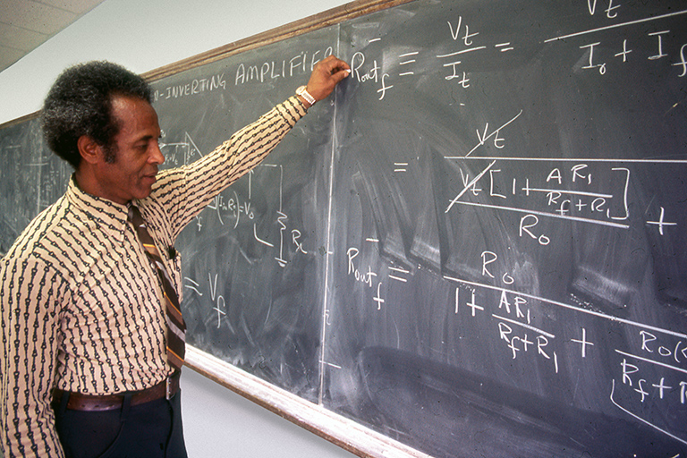
The college establishes the Minority Engineering Scholarship Program in cooperation with industry to increase the number of underrepresented students enrolled in engineering studies. Fred D. Brown Jr. served as the first director. The program is later incorporated as the basis for the college’s Dwight Hutchins Expanding Access to Engineering Program, which supports recruitment, retention, and graduate school preparation of engineering students from all backgrounds.
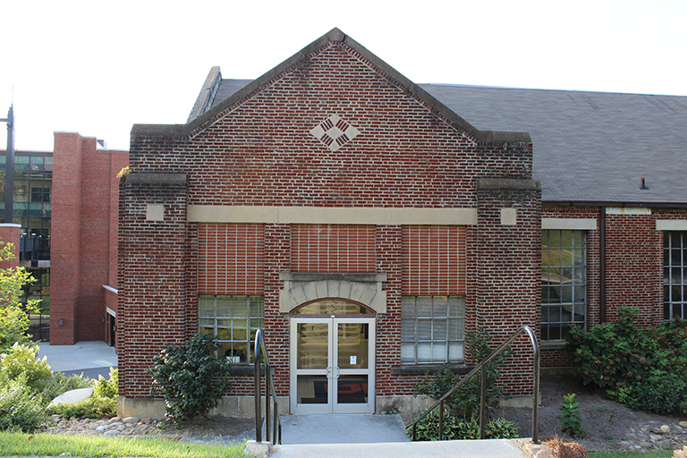
The university’s power plant, built in 1925, is renovated to house the Department of Nuclear Engineering. In 1988, the building is named Pasqua Hall in honor of Dr. Pietro F. Pasqua, the first head of the Department of Nuclear Engineering. In July 2018, Pasqua Hall was demolished to make way for the Zeanah Engineering Complex, the current home for the department.
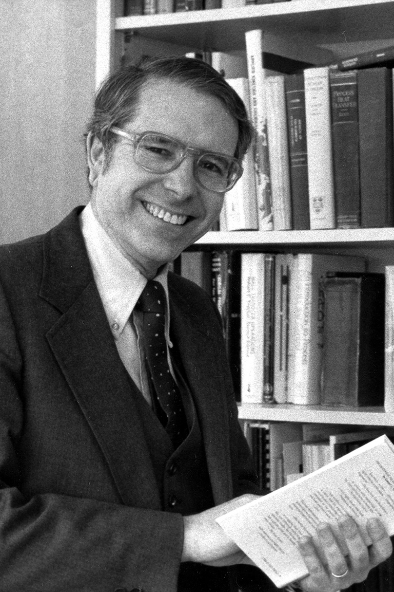
Longtime engineering professor and administrator John Prados served as interim UT chancellor in 1973, a brief stint in his 60-year university career. Prados spent time as an engineering professor, associate dean of engineering, dean of admissions and records, and even acting chancellor at UT Martin. He was also an acting director at the UT Space Institute and the UT System vice president for academic affairs. In 2016, Prados was named the inaugural member of UT’s Department of Chemical and Biomolecular Engineering Hall of Fame.
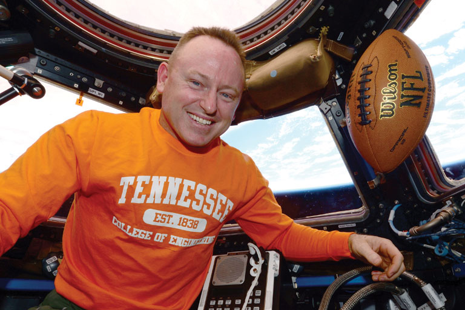
Aerospace engineering is officially indoctrinated into the mechanical engineering department. Today, the Department of Mechanical, Aerospace, and Biomedical Engineering is one of the largest in the college and includes the UT Space Institute in Tullahoma, Tennessee. Thirteen MABE faculty members are located at UTSI where they are performing internationally recognized research in engineering, hypersonics, and aviation systems. Nine astronauts are UTSI alumni.
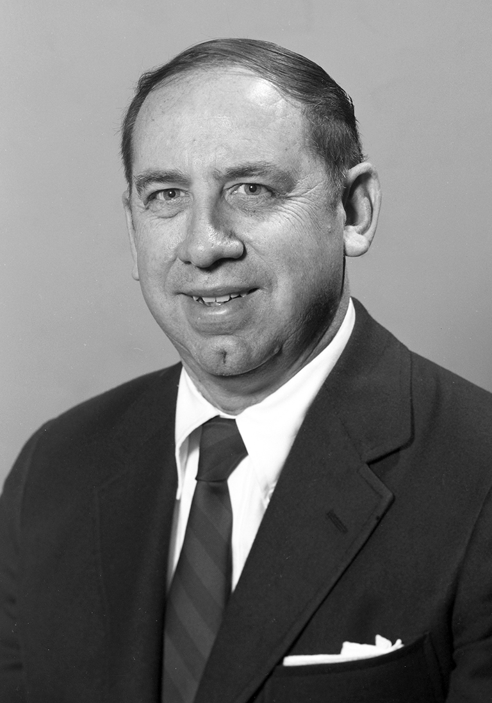
Dean Weaver believed that Tennessee should be a leadership state for the nation by serving as a magnet for industry. He believed that UT engineering graduates had the opportunity to significantly influence the corporate world.
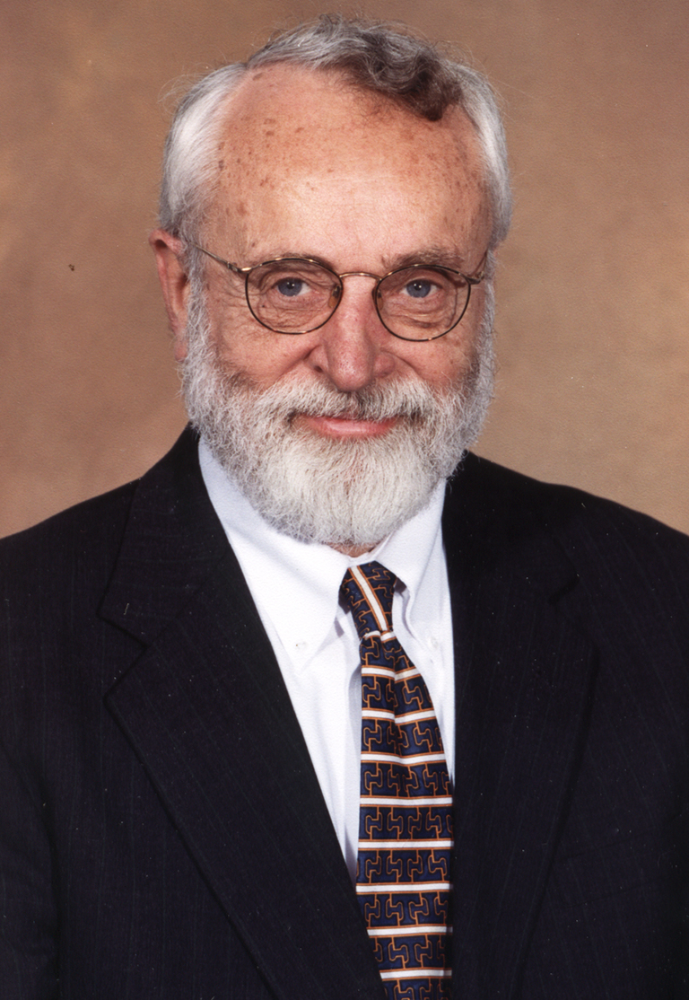
During Snyder’s tenure as dean, he sought radical change through a different style of management. He had a long-term vision for alumni support and industry involvement in the college. His ambitious agenda included the creation of several private Chairs of Excellence, which dramatically increased interdisciplinary research; an aggressive recruitment program for academically superior students; and a $12 million capital campaign. In July 1992, Dean Snyder was named UT Chancellor, and served in that role through June 30, 2001.
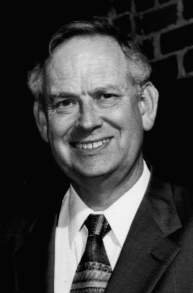
Stoneking was a dedicated academician and engineer who believed that students perform better when excited about their work. Under his guidance, the college reorganized its first-year curriculum into the innovative engage program. Dean Stoneking promoted and expanded the college’s funded research, strengthened and increased industry partnerships, organized a $33 million development campaign and formed two new degree programs in biomedical and computer engineering.
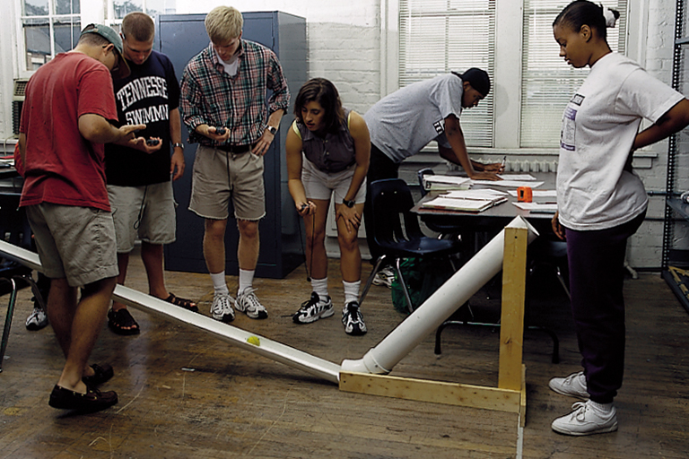
The college established the Jerry E. Stoneking engage™ Engineering Fundamentals Program for first-year students through a major grant from the National Science Foundation. The program is one of the most innovative of its kind in the nation. It takes a leading-edge, success-oriented approach to freshman engineering education, placing problem solving through collaboration as a priority.
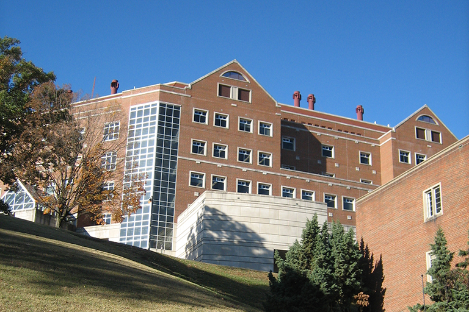
The Science and Engineering Research Facility (SERF) is constructed, a $25 million, 120,000 square-foot building that houses laboratories and classrooms for both the Tickle College of Engineering and the College of Arts and Sciences. The building sits on the site of the former Science Hall, razed in 1967. SERF connects the Earth and Planetary Sciences Building and Dabney/Buehler Hall.